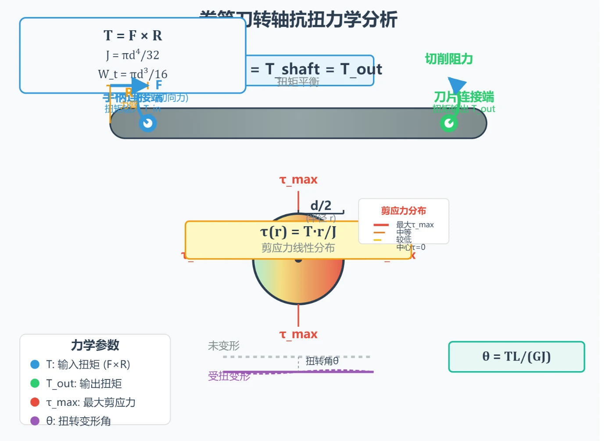
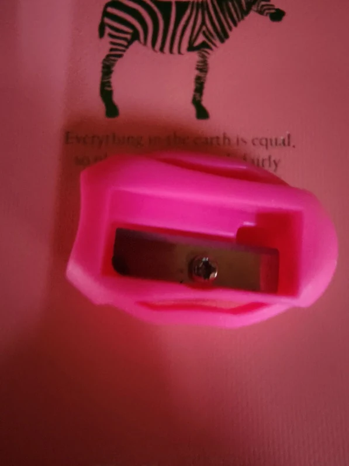
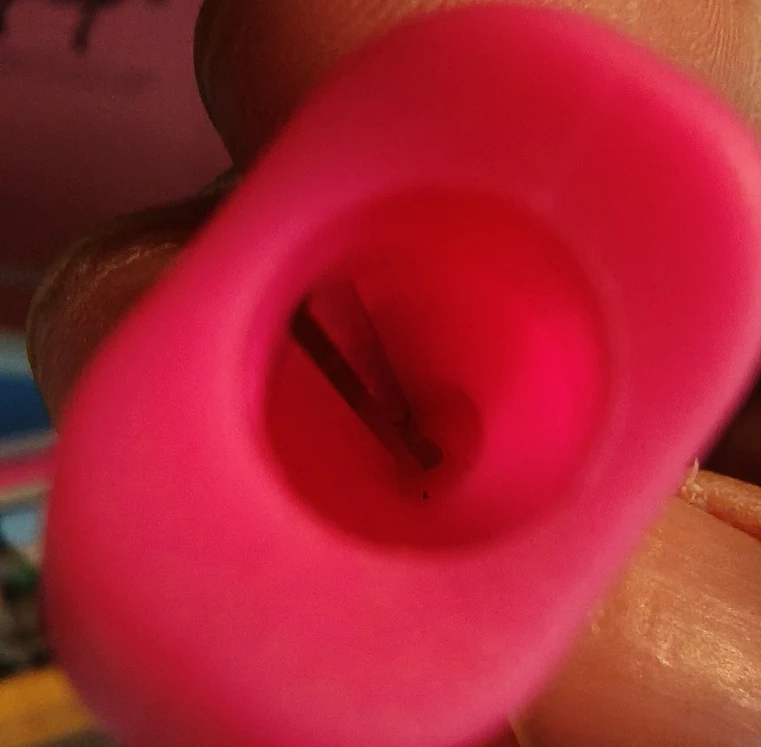
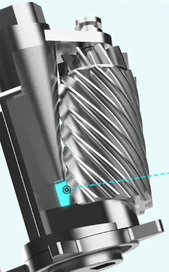
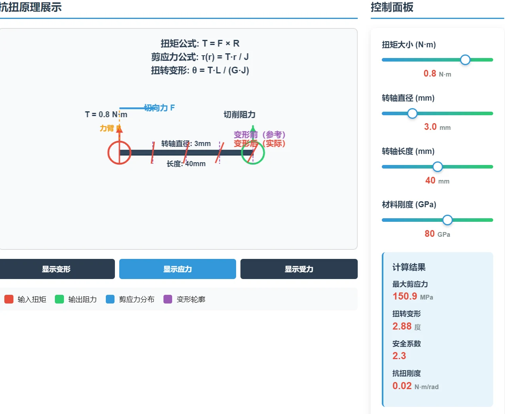
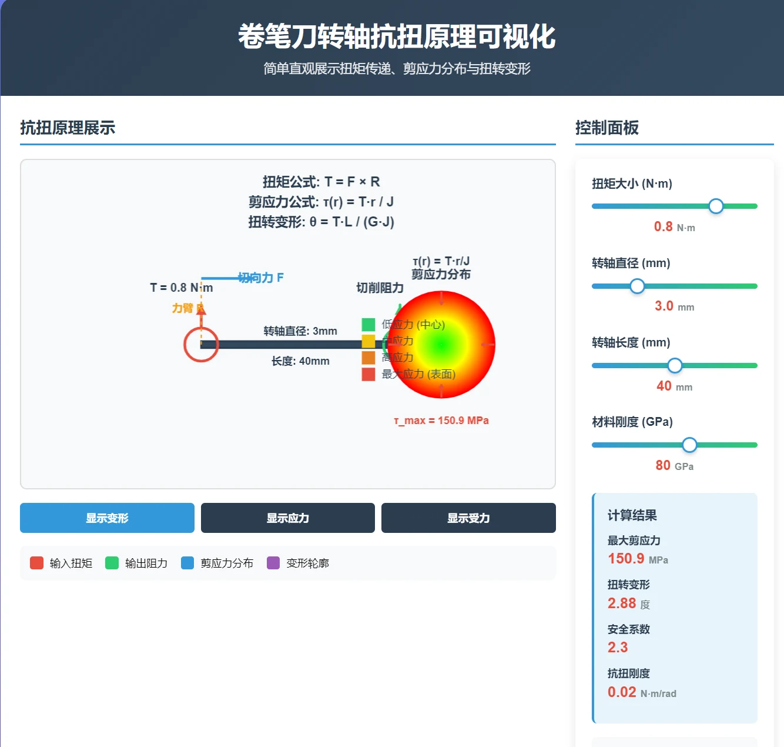
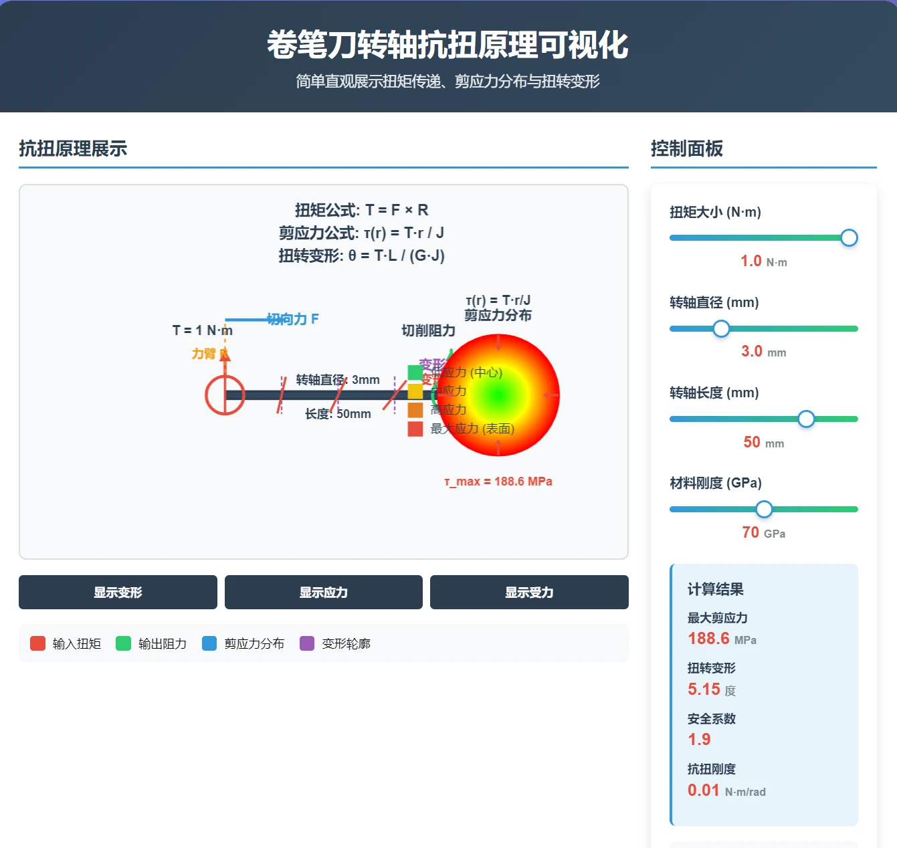

大连交通大学 · 智能建造23
我的原作卷笔刀转轴抗扭设计分析
王嘉齐
（1）表达力学问题
核心力学问题：卷笔刀转轴是典型的纯扭矩传递构件，在削铅笔过程中承受周期性交变扭矩。其核心功能是在有限空间内，以最小材料消耗实现高效扭矩传递和稳定转动刚度。这体现了“结构效率”的工程优化思想。
意义：这个微型构件完整承载了《结构设计原理》中抗扭设计的核心思想——通过合理的截面形状、材料选择和构造措施，在满足功能的前提下最小化材料用量。它是宏观结构抗扭理论在微型机械中的精确应用。
扭矩的产生与传递：
1、手施加切向力F于手柄，产生驱动扭矩：T=F×R
2、扭矩通过转轴截面产生环向剪应力，线性分布：外表面最大，中心为零
3、剪应力抵抗扭矩，将旋转运动传递到刀片，克服切削阻力
关键影响因素：
直径d：决定性因素，抗扭截面模量Wt∝d3 ，极惯性矩 J∝d4
材料剪切模量G：决定扭转刚度， k t=GJ/L
长度L：与扭转变形成正比， ϕ=TL/GJ
表面质量：影响应力集中，决定疲劳寿命
趋势：
直径增大→抗扭能力急剧增强（三次方关系），但重量和空间占用增加
材料剪切模量提高→刚度提高，但成本可能增加
长度缩短→变形减小，但受结构布局限制
表面质量提高→疲劳寿命延长，但加工成本上升
力学图示：
扭矩平衡：T_handle = T_shaft = T_cut
人手扭矩 转轴扭矩 切削阻力矩
剪应力分布（截面）：
最大τ → ○ ○ ○ ← 最大τ
○ ○ ○
中心τ=0 → ○
变形图示（侧视）：
未变形：| | | | |
受扭后：\ \ \ \ \ (扭转角φ)

（2）生活中体现


照片为实际拍摄，但是由于转轴实际是不好拆下来，只能在网上找一个转轴拆下来的图片，以便更加解释转轴里面的具体结构以及解释抗扭原理

卷笔刀转轴抗扭原理可视化如下图所示

第一个只显示变形，不显示应力

第二个只显示应力，不显示变形

第三个则是变形应力全都有
截面剪应力分布（示意图）：
最大τ区域（外表面）：███ (红色，τ_max)
中等τ区域：████ (橙色，0.7τ_max)
较低τ区域：██████ (黄色，0.4τ_max)
最小τ区域（近中心）：████████ (绿色，0.1τ_max)
计算公式：
τ_max = 16T/(πd³) + 4F/(πd²) （考虑轴向力）
其中：T - 扭矩，F - 轴向推力
（3）对照《结构设计原理》内容
卷笔刀转轴的设计，是《结构设计原理》中钢筋混凝土受扭构件设计理论的微型化、精密化实践。两者在核心逻辑上完全同构。
1. 抗扭机理的“材料”实现 《结构设计原理》规定，钢筋混凝土构件抗扭需配置纵向钢筋和封闭箍筋，形成空间桁架模型共同抵抗扭矩。在转轴这一“均质”金属构件中，此原理通过材料的微观各向同性与宏观形状来实现：
纵向“钢筋”：在钢材轧制或锻造过程中，晶粒沿轴向流动排列，形成了天然的、均匀分布的“纤维方向”，等效于沿截面周边均匀布置的纵向抗扭钢筋，抵抗扭矩引起的纵向拉应力。
环向“箍筋”：转轴连续、完整、光滑的外表面本身，构成了一个“无限密集、完全封闭的箍筋系统”。这个连续的表面约束了内部材料，提供了环向约束，抵抗斜向主拉应力，其作用与封闭箍筋完全一致。
2. 承载力公式的工程简化 规范中抗扭承载力公式为：T u =T c+T s，即混凝土贡献与钢筋贡献之和。对于转轴，此公式简化为： T u,shaft=τ u ⋅W t
其中，τ u（材料剪切强度）综合体现了“混凝土”基体与“钢筋”增强相的共同贡献，W t（抗扭截面模量）则完全由圆形截面这一最优抗扭形状决定。设计时必须保证工作扭矩 T≤Tu/γ（γ为安全系数）。
3. 构造要求的“无形”落实
规范中具体的构造要求，在转轴设计中转化为精密的制造工艺与几何控制：
最小配筋率 → 最小直径控制：防止“少筋”脆性破坏。转轴直径不得小于某个阈值（如2mm），确保基本的抗扭承载力。
纵筋与箍筋的配筋强度比ζ → 材料性能协调：通过选择韧性良好的钢材（如45钢调质），确保其纵向与环向力学性能匹配，能协同变形而非某方向先失效。
箍筋必须封闭 → 表面完整性：转轴必须无裂纹、无接缝、无锈蚀，确保剪切应力流的连续传递。
截面尺寸限制 → 直径与壁厚优化：防止“超筋”不经济破坏。需在有限空间内，通过计算找到刚好满足强度、刚度要求的最经济直径。
4. 刚度与耐久性设计的延伸 规范除强度外，亦关注正常使用下的变形（刚度）和重复荷载下的性能（疲劳）。转轴设计对此有更精密的考量：
刚度控制：为保证切削平稳、手感扎实，需控制单位长度扭转角θ=T/(GJ) 在很小范围内（如<2°/m）。这往往通过选择高G材料（钢）和足够大的直径来实现。
疲劳设计：卷笔刀使用属高周循环荷载。需控制应力幅Δτ ，并通过优化轴肩圆角半径、降低表面粗糙度等措施来大幅降低应力集中系数，从而满足数万次使用的寿命要求。
结论：卷笔刀转轴这一日常物品，是结构抗扭原理的绝佳微观载体。其设计绝非随意，而是严格遵循了与宏观钢筋混凝土构件同源的力学逻辑：通过合理的“配筋”（材料各向同性）和“截面形状”（圆形）抵抗扭矩，并通过精细的“构造措施”（表面质量、圆角）保证耐久性。它证明了优秀的结构设计是跨越尺度的智慧。
这是一份便于网页阅读的原作视图，保留提交内容的文字、图片和基本顺序；公开页面不显示学号。